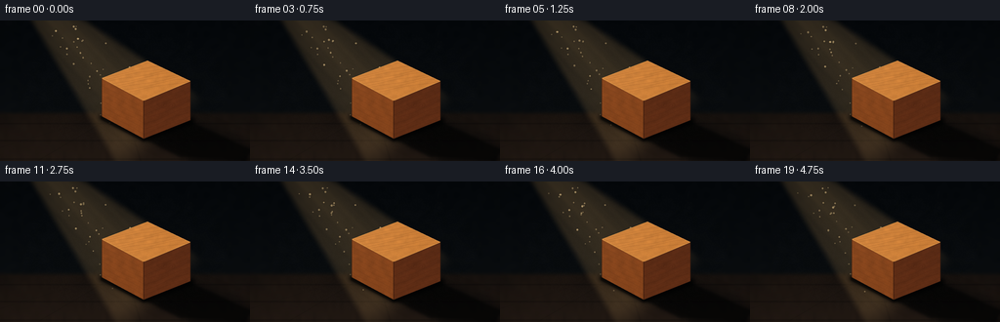
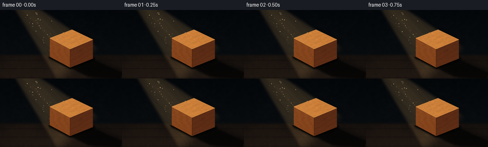

CODING AGENTS AS PIXEL WORLD MODELS
traex/GPT-5.6-Sol · phygen_041
点击播放 · 原生 RGB 像素
逐轮保存的候选
回放视频、检查图与代码变化。
每份候选均可单独播放。实际图片检查记录在下方工具轨迹中。
候选 01播放与检查图
点击播放 · 原生 RGB 像素


展开代码变化
--- 上一保存版本
+++ 本次保存版本
@@ -0,0 +1,279 @@
+from pathlib import Path
+import math
+import numpy as np
+from PIL import Image, ImageDraw, ImageFilter
+import artifact_io
+
+# Deterministic, supersampled procedural rendering. No external assets are used.
+CASE_DIR = Path(__file__).resolve().parent
+W, H, N = 256, 144, 20
+S = 4
+WW, HH = W * S, H * S
+rng = np.random.default_rng(41041)
+
+
+def resize_noise(noise, size=(WW, HH), blur=0.0):
+ a = ((noise - noise.min()) / max(1e-6, noise.max() - noise.min()) * 255).astype(np.uint8)
+ im = Image.fromarray(a, "L").resize(size, Image.Resampling.BICUBIC)
+ if blur:
+ im = im.filter(ImageFilter.GaussianBlur(blur * S))
+ return np.asarray(im, dtype=np.float32) / 255.0
+
+
+# Stable low-frequency material variations.
+wall_noise = resize_noise(rng.normal(size=(24, 43)), blur=0.7)
+floor_noise = resize_noise(rng.normal(size=(18, 64)), blur=0.35)
+wood_noise = resize_noise(rng.normal(size=(48, 80)), blur=0.18)
+fine_noise = resize_noise(rng.normal(size=(144, 256)), blur=0.0)
+
+yy, xx = np.mgrid[0:HH, 0:WW].astype(np.float32)
+x = xx / S
+y = yy / S
+
+
+def smoothstep(edge0, edge1, v):
+ z = np.clip((v - edge0) / (edge1 - edge0 + 1e-9), 0.0, 1.0)
+ return z * z * (3.0 - 2.0 * z)
+
+
+def blend(img, color, alpha):
+ a = np.clip(alpha, 0, 1)[..., None]
+ return img * (1.0 - a) + np.asarray(color, dtype=np.float32) * a
+
+
+def mask_polygon(points, blur=0):
+ m = Image.new("L", (WW, HH), 0)
+ ImageDraw.Draw(m).polygon([(round(px*S), round(py*S)) for px, py in points], fill=255)
+ if blur:
+ m = m.filter(ImageFilter.GaussianBlur(blur*S))
+ return np.asarray(m, dtype=np.float32) / 255.0
+
+
+def draw_lines_clipped(img, mask, line_specs):
+ """Draw anti-aliased RGBA strokes and clip them to a face mask."""
+ lay = Image.new("RGBA", (WW, HH), (0, 0, 0, 0))
+ d = ImageDraw.Draw(lay)
+ for pts, fill, width in line_specs:
+ pts2 = [(int(px*S), int(py*S)) for px, py in pts]
+ d.line(pts2, fill=fill, width=max(1, int(width*S)), joint="curve")
+ rgba = np.asarray(lay, dtype=np.float32)
+ a = (rgba[..., 3] / 255.0) * mask
+ return blend(img, rgba[..., :3], a)
+
+
+# Beam coordinate system: source is above and left, rays travel down-right.
+source = np.array([25.0, -30.0], dtype=np.float32)
+dvec = np.array([0.69, 0.724], dtype=np.float32)
+dvec /= np.linalg.norm(dvec)
+pvec = np.array([-dvec[1], dvec[0]], dtype=np.float32)
+rx = x - source[0]
+ry = y - source[1]
+beam_t = rx*dvec[0] + ry*dvec[1]
+beam_q = rx*pvec[0] + ry*pvec[1]
+
+# Fixed dust motes represented in beam coordinates.
+dust = []
+for _ in range(45):
+ tt = rng.uniform(27, 176)
+ width = 7.0 + 0.225 * tt
+ qq = rng.uniform(-0.82, 0.82) * width
+ dust.append((tt, qq, rng.uniform(0.32, 1.0), rng.uniform(0, 2*math.pi), rng.uniform(-0.9, 1.3)))
+
+# Cuboid geometry, with vertical screen edges and a perspective top.
+top_poly = [(104, 59), (151, 41), (195, 62), (147, 82)]
+left_poly = [(104, 59), (147, 82), (147, 121), (104, 98)]
+right_poly = [(147, 82), (195, 62), (195, 102), (147, 121)]
+top_mask = mask_polygon(top_poly)
+left_mask = mask_polygon(left_poly)
+right_mask = mask_polygon(right_poly)
+block_mask = np.clip(top_mask + left_mask + right_mask, 0, 1)
+
+frames = []
+for fi in range(N):
+ tm = fi / 4.0
+ flicker = 0.985 + 0.018*math.sin(tm*1.65) + 0.008*math.sin(tm*4.7 + 0.8)
+
+ # Dark room: cool near-black upper wall with a warm, matte wooden floor.
+ vertical = np.clip(y / H, 0, 1)
+ img = np.zeros((HH, WW, 3), dtype=np.float32)
+ img[..., 0] = 5.0 + 7.0*vertical + 3.3*(wall_noise - .5)
+ img[..., 1] = 8.0 + 7.0*vertical + 3.1*(wall_noise - .5)
+ img[..., 2] = 11.0 + 6.0*vertical + 3.5*(wall_noise - .5)
+
+ # Floor begins behind the block, its quiet texture and seams receding in perspective.
+ floor_gate = smoothstep(91, 98, y)
+ floor_col = np.empty_like(img)
+ floor_col[..., 0] = 22 + 13*(y-95)/49 + 5.5*(floor_noise-.5)
+ floor_col[..., 1] = 17 + 9*(y-95)/49 + 4.0*(floor_noise-.5)
+ floor_col[..., 2] = 14 + 6*(y-95)/49 + 3.0*(floor_noise-.5)
+ img = img*(1-floor_gate[...,None]) + floor_col*floor_gate[...,None]
+
+ # Soft perspective floorboard seams.
+ seams = np.zeros((HH, WW), dtype=np.float32)
+ for sy in (105.5, 123.0, 142.0):
+ seams += np.exp(-0.5*((y-sy)/0.55)**2)
+ # Subtle seams fan toward the horizon.
+ for xb in (-45, 38, 144, 273, 360):
+ line_x = 128 + (xb-128)*np.clip((y-91)/53, 0, 1)
+ seams += 0.42*np.exp(-0.5*((x-line_x)/0.58)**2)*floor_gate
+ img = blend(img, (7, 6, 6), np.clip(seams*.31, 0, .42))
+
+ # Volumetric diagonal shaft. Feathered edges plus faint internal ray bands.
+ width = 6.8 + 0.225*np.maximum(beam_t, 0)
+ body = smoothstep(width+7.5, width-2.0, np.abs(beam_q))
+ body *= smoothstep(0, 15, beam_t) * smoothstep(213, 177, beam_t)
+ center_haze = np.exp(-0.5*(beam_q/(width*.88 + 1))**2)
+ raybands = (0.50 + 0.21*np.sin(beam_q*.48 + 0.7) +
+ 0.13*np.sin(beam_q*.91 - 1.2) + 0.09*np.sin(beam_q*.18 + 2.1))
+ raybands = np.clip(raybands, .16, .9)
+ beam_alpha = body * (0.095 + 0.075*center_haze + 0.028*raybands) * flicker
+ img = blend(img, (218, 167, 98), beam_alpha)
+ # A luminous core gives the shaft direction without making it opaque.
+ core = body*np.exp(-0.5*((beam_q+2.0)/(width*.52+1))**2)
+ img = blend(img, (240, 197, 123), core*0.045*flicker)
+
+ # Warm pool where the ray reaches the floor.
+ pool = np.exp(-0.5*(((x-151)/62)**2 + ((y-111)/18)**2))*floor_gate
+ pool *= smoothstep(155, 78, beam_t)
+ img = blend(img, (154, 98, 48), pool*0.20*flicker)
+
+ # Dust is visible only because it crosses the beam. Motion is deliberately restrained.
+ dust_glow = Image.new("RGBA", (WW, HH), (0, 0, 0, 0))
+ dd = ImageDraw.Draw(dust_glow)
+ for j, (tt0, qq0, scale, phase, speed) in enumerate(dust):
+ tt = 27 + ((tt0-27 + speed*tm*1.6) % 149)
+ qq = qq0 + math.sin(tm*.7 + phase)*0.75
+ px = source[0] + dvec[0]*tt + pvec[0]*qq
+ py = source[1] + dvec[1]*tt + pvec[1]*qq
+ tw = 7 + .225*tt
+ if abs(qq) > tw*.93 or not (-3 < px < W+3 and -3 < py < H+3):
+ continue
+ shimmer = .52 + .48*math.sin(phase + tm*(1.1 + .04*j))**2
+ rad = (0.28 + .68*scale)*S
+ alpha = int(35 + 115*scale*shimmer)
+ box = (int(px*S-rad), int(py*S-rad), int(px*S+rad), int(py*S+rad))
+ dd.ellipse(box, fill=(255, 218, 153, alpha))
+ glow = dust_glow.filter(ImageFilter.GaussianBlur(1.1*S))
+ img = np.asarray(Image.alpha_composite(Image.fromarray(np.uint8(np.clip(img,0,255)), "RGB").convert("RGBA"), glow).convert("RGB"), dtype=np.float32)
+ # Crisp centers for the nearer dust particles.
+ img = np.asarray(Image.alpha_composite(Image.fromarray(np.uint8(np.clip(img,0,255)), "RGB").convert("RGBA"), dust_glow).convert("RGB"), dtype=np.float32)
+
+ # A broad, physically directed cast shadow running from the block to the bottom-right.
+ shadow_outer = mask_polygon([(103,97),(151,78),(196,101),(269,129),(269,147),(210,150),(147,121)], blur=4.2)
+ shadow_core = mask_polygon([(112,99),(151,84),(192,102),(257,132),(252,144),(185,140),(147,121)], blur=1.25)
+ img = blend(img, (3, 4, 5), shadow_outer*.48)
+ img = blend(img, (2, 3, 3), shadow_core*.62)
+ # Dense contact shadow anchors the block to the floor.
+ contact = mask_polygon([(102,96),(149,116),(198,99),(199,105),(148,124),(102,101)], blur=1.8)
+ img = blend(img, (1, 2, 2), contact*.73)
+
+ # Wood faces with coherent tonal contrast and fine organic grain.
+ n1 = (wood_noise-.5)
+ fine = (fine_noise-.5)
+ grain_top = (np.sin((x + 2.35*y)*.33 + 1.5*np.sin(y*.15)) + 1)/2
+ grain_left = (np.sin((x*.48 - y*.17) + 1.1*np.sin(y*.23)) + 1)/2
+ grain_right = (np.sin((x*.30 + y*.61) + 1.3*np.sin(x*.11)) + 1)/2
+
+ top_tex = np.empty_like(img)
+ top_l = 1 + .10*n1 + .025*fine - .035*grain_top
+ top_tex[...,0] = 191*top_l + 16
+ top_tex[...,1] = 119*top_l + 10
+ top_tex[...,2] = 52*top_l + 5
+ # Highlight is strongest at the upper-left arrival side of the beam.
+ top_tex += (np.clip((172-x)/90,0,1)*9)[...,None]
+ img = img*(1-top_mask[...,None]) + top_tex*top_mask[...,None]
+
+ left_tex = np.empty_like(img)
+ left_l = 1 + .105*n1 + .028*fine - .045*grain_left
+ left_tex[...,0] = 136*left_l
+ left_tex[...,1] = 70*left_l
+ left_tex[...,2] = 29*left_l
+ left_tex += (np.clip((100-y)/70,0,1)*5)[...,None]
+ img = img*(1-left_mask[...,None]) + left_tex*left_mask[...,None]
+
+ right_tex = np.empty_like(img)
+ right_l = 1 + .10*n1 + .025*fine - .045*grain_right
+ right_tex[...,0] = 92*right_l
+ right_tex[...,1] = 44*right_l
+ right_tex[...,2] = 22*right_l
+ # reflected floor warmth near the lower edge
+ right_tex[...,0] += np.clip((y-68)/70,0,1)*8
+ right_tex[...,1] += np.clip((y-68)/70,0,1)*4
+ img = img*(1-right_mask[...,None]) + right_tex*right_mask[...,None]
+
+ # Hand-drawn grain ribbons, clipped per face.
+ top_lines = []
+ for k in range(8):
+ u = k/7
+ pts=[]
+ for j in range(18):
+ a=j/17
+ # travel across the top in its long perspective direction
+ px=105 + 88*a
+ top_y=58 - 17*a
+ bot_y=78 - 16*a
+ py=top_y*(1-u)+bot_y*u + math.sin(a*9+k*1.7)*.65
+ pts.append((px,py))
+ top_lines.append((pts,(74,35,14,58),.42))
+ img = draw_lines_clipped(img, top_mask, top_lines)
+
+ left_lines=[]
+ for k in range(7):
+ v=(k+.35)/7.3
+ pts=[]
+ for j in range(16):
+ a=j/15
+ px=104 + 43*a
+ py=(59+39*v) + 23*a + math.sin(a*8+k)*.5
+ pts.append((px,py))
+ left_lines.append((pts,(58,25,12,55),.38))
+ img = draw_lines_clipped(img, left_mask, left_lines)
+
+ right_lines=[]
+ for k in range(8):
+ v=(k+.15)/8.1
+ pts=[]
+ for j in range(18):
+ a=j/17
+ px=147+48*a
+ py=(82+39*v) - (20-1.5*v)*a + math.sin(a*8.5+k)*.6
+ pts.append((px,py))
+ right_lines.append((pts,(45,20,11,62),.42))
+ img = draw_lines_clipped(img, right_mask, right_lines)
+
+ # A pair of subtle knots makes the material unmistakably wood.
+ knot_layer = Image.new("RGBA", (WW, HH), (0,0,0,0))
+ kd = ImageDraw.Draw(knot_layer)
+ for rad, alpha in ((7.0,32),(4.8,42),(2.4,52)):
+ kd.ellipse(((172-rad)*S,(87-rad*.52)*S,(172+rad)*S,(87+rad*.52)*S), outline=(42,18,9,alpha), width=max(1,int(.65*S)))
+ knot_rgba=np.asarray(knot_layer,dtype=np.float32)
+ img=blend(img,knot_rgba[...,:3],(knot_rgba[...,3]/255)*right_mask)
+
+ # Clean beveled edges and a golden rim where the light catches the top.
+ edge = Image.new("RGBA", (WW, HH), (0,0,0,0))
+ ed = ImageDraw.Draw(edge)
+ sc=lambda pts:[(int(a*S),int(b*S)) for a,b in pts]
+ ed.line(sc(top_poly+[top_poly[0]]), fill=(236,170,84,188), width=max(2,int(.72*S)), joint="curve")
+ ed.line(sc([(104,59),(147,82),(195,62)]), fill=(249,184,91,158), width=max(2,int(.58*S)))
+ ed.line(sc([(147,82),(147,121)]), fill=(54,25,12,210), width=max(2,int(.75*S)))
+ ed.line(sc([(104,59),(104,98),(147,121),(195,102),(195,62)]), fill=(42,22,14,185), width=max(2,int(.64*S)), joint="curve")
+ img=np.asarray(Image.alpha_composite(Image.fromarray(np.uint8(np.clip(img,0,255)),"RGB").convert("RGBA"),edge).convert("RGB"),dtype=np.float32)
+
+ # Narrow ambient occlusion just beneath lower edges.
+ ao = mask_polygon([(103,97),(147,119),(196,100),(196,104),(147,124),(103,101)], blur=.65)
+ ao *= (1-block_mask)
+ img=blend(img,(2,2,2),ao*.53)
+
+ # Cinematic vignette and an extremely subtle fixed film texture.
+ nx=(x-W/2)/(W*.69)
+ ny=(y-H/2)/(H*.76)
+ vign=np.clip((nx*nx+ny*ny-.30)*.21,0,.23)
+ img *= (1-vign[...,None])
+ img += (fine_noise[...,None]-.5)*1.25
+
+ out=Image.fromarray(np.uint8(np.clip(img,0,255)),"RGB").resize((W,H),Image.Resampling.LANCZOS)
+ frames.append(np.asarray(out,dtype=np.uint8))
+
+frames=np.stack(frames,axis=0)
+artifact_io.save(frames, CASE_DIR)
+print(f"saved {frames.shape} {frames.dtype}; range={frames.min()}..{frames.max()}")
可观测工具轨迹
实际执行的命令与返回图片。
命令 1exit 0
/bin/bash -lc "cat prompt.txt && printf '\\n--- GENERATION_RULES.md ---\\n' && cat GENERATION_RULES.md && printf '\\n--- task_spec.json ---\\n' && cat task_spec.json"
命令 2exit 0
/bin/bash -lc "find . -maxdepth 3 -type f -printf '%p\\n' | sort && printf '\\n--- tools ---\\n' && command -v ffmpeg || true && command -v blender || true && command -v python3 || true"
命令 3exit 0
/bin/bash -lc 'cat artifact_io.py'
命令 4exit 0
/bin/bash -lc "cat > generate.py <<'PY'
from pathlib import Path
import math
import numpy as np
from PIL import Image, ImageDraw, ImageFilter
import artifact_io
# Deterministic, supersampled procedural rendering. No external assets are used.
CASE_DIR = Path(__file__).resolve().parent
W, H, N = 256, 144, 20
S = 4
WW, HH = W * S, H * S
rng = np.random.default_rng(41041)
def resize_noise(noise, size=(WW, HH), blur=0.0):
a = ((noise - noise.min()) / max(1e-6, noise.max() - noise.min()) * 255).astype(np.uint8)
im = Image.fromarray(a, \"L\").resize(size, Image.Resampling.BICUBIC)
if blur:
im = im.filter(ImageFilter.GaussianBlur(blur * S))
return np.asarray(im, dtype=np.float32) / 255.0
# Stable low-frequency material variations.
wall_noise = resize_noise(rng.normal(size=(24, 43)), blur=0.7)
floor_noise = resize_noise(rng.normal(size=(18, 64)), blur=0.35)
wood_noise = resize_noise(rng.normal(size=(48, 80)), blur=0.18)
fine_noise = resize_noise(rng.normal(size=(144, 256)), blur=0.0)
yy, xx = np.mgrid[0:HH, 0:WW].astype(np.float32)
x = xx / S
y = yy / S
def smoothstep(edge0, edge1, v):
z = np.clip((v - edge0) / (edge1 - edge0 + 1e-9), 0.0, 1.0)
return z * z * (3.0 - 2.0 * z)
def blend(img, color, alpha):
a = np.clip(alpha, 0, 1)[..., None]
return img * (1.0 - a) + np.asarray(color, dtype=np.float32) * a
def mask_polygon(points, blur=0):
m = Image.new(\"L\", (WW, HH), 0)
ImageDraw.Draw(m).polygon([(round(px*S), round(py*S)) for px, py in points], fill=255)
if blur:
m = m.filter(ImageFilter.GaussianBlur(blur*S))
return np.asarray(m, dtype=np.float32) / 255.0
def draw_lines_clipped(img, mask, line_specs):
\"\"\"Draw anti-aliased RGBA strokes and clip them to a face mask.\"\"\"
lay = Image.new(\"RGBA\", (WW, HH), (0, 0, 0, 0))
d = ImageDraw.Draw(lay)
for pts, fill, width in line_specs:
pts2 = [(int(px*S), int(py*S)) for px, py in pts]
d.line(pts2, fill=fill, width=max(1, int(width*S)), joint=\"curve\")
rgba = np.asarray(lay, dtype=np.float32)
a = (rgba[..., 3] / 255.0) * mask
return blend(img, rgba[..., :3], a)
# Beam coordinate system: source is above and left, rays travel down-right.
source = np.array([25.0, -30.0], dtype=np.float32)
dvec = np.array([0.69, 0.724], dtype=np.float32)
dvec /= np.linalg.norm(dvec)
pvec = np.array([-dvec[1], dvec[0]], dtype=np.float32)
rx = x - source[0]
ry = y - source[1]
beam_t = rx*dvec[0] + ry*dvec[1]
beam_q = rx*pvec[0] + ry*pvec[1]
# Fixed dust motes represented in beam coordinates.
dust = []
for _ in range(45):
tt = rng.uniform(27, 176)
width = 7.0 + 0.225 * tt
qq = rng.uniform(-0.82, 0.82) * width
dust.append((tt, qq, rng.uniform(0.32, 1.0), rng.uniform(0, 2*math.pi), rng.uniform(-0.9, 1.3)))
# Cuboid geometry, with vertical screen edges and a perspective top.
top_poly = [(104, 59), (151, 41), (195, 62), (147, 82)]
left_poly = [(104, 59), (147, 82), (147, 121), (104, 98)]
right_poly = [(147, 82), (195, 62), (195, 102), (147, 121)]
top_mask = mask_polygon(top_poly)
left_mask = mask_polygon(left_poly)
right_mask = mask_polygon(right_poly)
block_mask = np.clip(top_mask + left_mask + right_mask, 0, 1)
frames = []
for fi in range(N):
tm = fi / 4.0
flicker = 0.985 + 0.018*math.sin(tm*1.65) + 0.008*math.sin(tm*4.7 + 0.8)
# Dark room: cool near-black upper wall with a warm, matte wooden floor.
vertical = np.clip(y / H, 0, 1)
img = np.zeros((HH, WW, 3), dtype=np.float32)
img[..., 0] = 5.0 + 7.0*vertical + 3.3*(wall_noise - .5)
img[..., 1] = 8.0 + 7.0*vertical + 3.1*(wall_noise - .5)
img[..., 2] = 11.0 + 6.0*vertical + 3.5*(wall_noise - .5)
# Floor begins behind the block, its quiet texture and seams receding in perspective.
floor_gate = smoothstep(91, 98, y)
floor_col = np.empty_like(img)
floor_col[..., 0] = 22 + 13*(y-95)/49 + 5.5*(floor_noise-.5)
floor_col[..., 1] = 17 + 9*(y-95)/49 + 4.0*(floor_noise-.5)
floor_col[..., 2] = 14 + 6*(y-95)/49 + 3.0*(floor_noise-.5)
img = img*(1-floor_gate[...,None]) + floor_col*floor_gate[...,None]
# Soft perspective floorboard seams.
seams = np.zeros((HH, WW), dtype=np.float32)
for sy in (105.5, 123.0, 142.0):
seams += np.exp(-0.5*((y-sy)/0.55)**2)
# Subtle seams fan toward the horizon.
for xb in (-45, 38, 144, 273, 360):
line_x = 128 + (xb-128)*np.clip((y-91)/53, 0, 1)
seams += 0.42*np.exp(-0.5*((x-line_x)/0.58)**2)*floor_gate
img = blend(img, (7, 6, 6), np.clip(seams*.31, 0, .42))
# Volumetric diagonal shaft. Feathered edges plus faint internal ray bands.
width = 6.8 + 0.225*np.maximum(beam_t, 0)
body = smoothstep(width+7.5, width-2.0, np.abs(beam_q))
body *= smoothstep(0, 15, beam_t) * smoothstep(213, 177, beam_t)
center_haze = np.exp(-0.5*(beam_q/(width*.88 + 1))**2)
raybands = (0.50 + 0.21*np.sin(beam_q*.48 + 0.7) +
0.13*np.sin(beam_q*.91 - 1.2) + 0.09*np.sin(beam_q*.18 + 2.1))
raybands = np.clip(raybands, .16, .9)
beam_alpha = body * (0.095 + 0.075*center_haze + 0.028*raybands) * flicker
img = blend(img, (218, 167, 98), beam_alpha)
# A luminous core gives the shaft direction without making it opaque.
core = body*np.exp(-0.5*((beam_q+2.0)/(width*.52+1))**2)
img = blend(img, (240, 197, 123), core*0.045*flicker)
# Warm pool where the ray reaches the floor.
pool = np.exp(-0.5*(((x-151)/62)**2 + ((y-111)/18)**2))*floor_gate
pool *= smoothstep(155, 78, beam_t)
img = blend(img, (154, 98, 48), pool*0.20*flicker)
# Dust is visible only because it crosses the beam. Motion is deliberately restrained.
dust_glow = Image.new(\"RGBA\", (WW, HH), (0, 0, 0, 0))
dd = ImageDraw.Draw(dust_glow)
for j, (tt0, qq0, scale, phase, speed) in enumerate(dust):
tt = 27 + ((tt0-27 + speed*tm*1.6) % 149)
qq = qq0 + math.sin(tm*.7 + phase)*0.75
px = source[0] + dvec[0]*tt + pvec[0]*qq
py = source[1] + dvec[1]*tt + pvec[1]*qq
tw = 7 + .225*tt
if abs(qq) > tw*.93 or not (-3 < px < W+3 and -3 < py < H+3):
continue
shimmer = .52 + .48*math.sin(phase + tm*(1.1 + .04*j))**2
rad = (0.28 + .68*scale)*S
alpha = int(35 + 115*scale*shimmer)
box = (int(px*S-rad), int(py*S-rad), int(px*S+rad), int(py*S+rad))
dd.ellipse(box, fill=(255, 218, 153, alpha))
glow = dust_glow.filter(ImageFilter.GaussianBlur(1.1*S))
img = np.asarray(Image.alpha_composite(Image.fromarray(np.uint8(np.clip(img,0,255)), \"RGB\").convert(\"RGBA\"), glow).convert(\"RGB\"), dtype=np.float32)
# Crisp centers for the nearer dust particles.
img = np.asarray(Image.alpha_composite(Image.fromarray(np.uint8(np.clip(img,0,255)), \"RGB\").convert(\"RGBA\"), dust_glow).convert(\"RGB\"), dtype=np.float32)
# A broad, physically directed cast shadow running from the block to the bottom-right.
shadow_outer = mask_polygon([(103,97),(151,78),(196,101),(269,129),(269,147),(210,150),(147,121)], blur=4.2)
shadow_core = mask_polygon([(112,99),(151,84),(192,102),(257,132),(252,144),(185,140),(147,121)], blur=1.25)
img = blend(img, (3, 4, 5), shadow_outer*.48)
img = blend(img, (2, 3, 3), shadow_core*.62)
# Dense contact shadow anchors the block to the floor.
contact = mask_polygon([(102,96),(149,116),(198,99),(199,105),(148,124),(102,101)], blur=1.8)
img = blend(img, (1, 2, 2), contact*.73)
# Wood faces with coherent tonal contrast and fine organic grain.
n1 = (wood_noise-.5)
fine = (fine_noise-.5)
grain_top = (np.sin((x + 2.35*y)*.33 + 1.5*np.sin(y*.15)) + 1)/2
grain_left = (np.sin((x*.48 - y*.17) + 1.1*np.sin(y*.23)) + 1)/2
grain_right = (np.sin((x*.30 + y*.61) + 1.3*np.sin(x*.11)) + 1)/2
top_tex = np.empty_like(img)
top_l = 1 + .10*n1 + .025*fine - .035*grain_top
top_tex[...,0] = 191*top_l + 16
top_tex[...,1] = 119*top_l + 10
top_tex[...,2] = 52*top_l + 5
# Highlight is strongest at the upper-left arrival side of the beam.
top_tex += (np.clip((172-x)/90,0,1)*9)[...,None]
img = img*(1-top_mask[...,None]) + top_tex*top_mask[...,None]
left_tex = np.empty_like(img)
left_l = 1 + .105*n1 + .028*fine - .045*grain_left
left_tex[...,0] = 136*left_l
left_tex[...,1] = 70*left_l
left_tex[...,2] = 29*left_l
left_tex += (np.clip((100-y)/70,0,1)*5)[...,None]
img = img*(1-left_mask[...,None]) + left_tex*left_mask[...,None]
right_tex = np.empty_like(img)
right_l = 1 + .10*n1 + .025*fine - .045*grain_right
right_tex[...,0] = 92*right_l
right_tex[...,1] = 44*right_l
right_tex[...,2] = 22*right_l
# reflected floor warmth near the lower edge
right_tex[...,0] += np.clip((y-68)/70,0,1)*8
right_tex[...,1] += np.clip((y-68)/70,0,1)*4
img = img*(1-right_mask[...,None]) + right_tex*right_mask[...,None]
# Hand-drawn grain ribbons, clipped per face.
top_lines = []
for k in range(8):
u = k/7
pts=[]
for j in range(18):
a=j/17
# travel across the top in its long perspective direction
px=105 + 88*a
top_y=58 - 17*a
bot_y=78 - 16*a
py=top_y*(1-u)+bot_y*u + math.sin(a*9+k*1.7)*.65
pts.append((px,py))
top_lines.append((pts,(74,35,14,58),.42))
img = draw_lines_clipped(img, top_mask, top_lines)
left_lines=[]
for k in range(7):
v=(k+.35)/7.3
pts=[]
for j in range(16):
a=j/15
px=104 + 43*a
py=(59+39*v) + 23*a + math.sin(a*8+k)*.5
pts.append((px,py))
left_lines.append((pts,(58,25,12,55),.38))
img = draw_lines_clipped(img, left_mask, left_lines)
right_lines=[]
for k in range(8):
v=(k+.15)/8.1
pts=[]
for j in range(18):
a=j/17
px=147+48*a
py=(82+39*v) - (20-1.5*v)*a + math.sin(a*8.5+k)*.6
pts.append((px,py))
right_lines.append((pts,(45,20,11,62),.42))
img = draw_lines_clipped(img, right_mask, right_lines)
# A pair of subtle knots makes the material unmistakably wood.
knot_layer = Image.new(\"RGBA\", (WW, HH), (0,0,0,0))
kd = ImageDraw.Draw(knot_layer)
for rad, alpha in ((7.0,32),(4.8,42),(2.4,52)):
kd.ellipse(((172-rad)*S,(87-rad*.52)*S,(172+rad)*S,(87+rad*.52)*S), outline=(42,18,9,alpha), width=max(1,int(.65*S)))
knot_rgba=np.asarray(knot_layer,dtype=np.float32)
img=blend(img,knot_rgba[...,:3],(knot_rgba[...,3]/255)*right_mask)
# Clean beveled edges and a golden rim where the light catches the top.
edge = Image.new(\"RGBA\", (WW, HH), (0,0,0,0))
ed = ImageDraw.Draw(edge)
sc=lambda pts:[(int(a*S),int(b*S)) for a,b in pts]
ed.line(sc(top_poly+[top_poly[0]]), fill=(236,170,84,188), width=max(2,int(.72*S)), joint=\"curve\")
ed.line(sc([(104,59),(147,82),(195,62)]), fill=(249,184,91,158), width=max(2,int(.58*S)))
ed.line(sc([(147,82),(147,121)]), fill=(54,25,12,210), width=max(2,int(.75*S)))
ed.line(sc([(104,59),(104,98),(147,121),(195,102),(195,62)]), fill=(42,22,14,185), width=max(2,int(.64*S)), joint=\"curve\")
img=np.asarray(Image.alpha_composite(Image.fromarray(np.uint8(np.clip(img,0,255)),\"RGB\").convert(\"RGBA\"),edge).convert(\"RGB\"),dtype=np.float32)
# Narrow ambient occlusion just beneath lower edges.
ao = mask_polygon([(103,97),(147,119),(196,100),(196,104),(147,124),(103,101)], blur=.65)
ao *= (1-block_mask)
img=blend(img,(2,2,2),ao*.53)
# Cinematic vignette and an extremely subtle fixed film texture.
nx=(x-W/2)/(W*.69)
ny=(y-H/2)/(H*.76)
vign=np.clip((nx*nx+ny*ny-.30)*.21,0,.23)
img *= (1-vign[...,None])
img += (fine_noise[...,None]-.5)*1.25
out=Image.fromarray(np.uint8(np.clip(img,0,255)),\"RGB\").resize((W,H),Image.Resampling.LANCZOS)
frames.append(np.asarray(out,dtype=np.uint8))
frames=np.stack(frames,axis=0)
artifact_io.save(frames, CASE_DIR)
print(f\"saved {frames.shape} {frames.dtype}; range={frames.min()}..{frames.max()}\")
PY
python3 generate.py
ls -lh pixels.npz inspection.png transition_check.png index.html frames/00.png"命令 5exit 0
/bin/bash -lc 'python3 -m py_compile generate.py artifact_io.py && test $(find frames -name '"'*.png' | wc -l) -eq 20 && grep -q 'A ray of light' index.html && echo 'compile/files/player: OK' && du -sh ."
命令 6exit 0
/bin/bash -lc "python3 - <<'PY'
import numpy as np
from PIL import Image
from pathlib import Path
fs=np.stack([np.asarray(Image.open(f'frames/{i:02d}.png').convert('RGB')) for i in range(20)])
print('frames',fs.shape,fs.dtype,'range',fs.min(),fs.max())
print('channel means',np.round(fs.mean((0,1,2)),2))
d=np.abs(np.diff(fs.astype(np.int16),axis=0))
print('temporal MAD min/mean/max',round(float(d.mean((1,2,3)).min()),3),round(float(d.mean()),3),round(float(d.mean((1,2,3)).max()),3))
print('changed px min/max',int((d.max(3)>0).sum((1,2)).min()),int((d.max(3)>0).sum((1,2)).max()))
# luminance probes: dark corner, beam before block, wood top, wood side, shadow at bottom
L=fs.mean(0).mean(2)
regions={'dark_corner':L[15:40,205:245], 'beam_air':L[25:57,65:119], 'wood_top':L[51:76,120:181], 'wood_side':L[82:112,150:190], 'bottom_shadow':L[124:141,183:244], 'bottom_floor':L[124:141,20:80]}
for k,v in regions.items(): print(k,round(float(v.mean()),1),round(float(v.max()),1))
# Validate packed artifact dimensions and reconstruction
z=np.load('pixels.npz')['pixels']
print('packed tensor',z.shape,z.dtype)
rgb=np.stack(((z>>16)&255,(z>>8)&255,z&255),axis=-1).transpose(2,0,1,3).astype(np.uint8)
print('artifact matches PNGs',np.array_equal(rgb,fs))
PY"命令 7exit 0
/bin/bash -lc "python3 - <<'PY'
from PIL import Image
import numpy as np
im=np.asarray(Image.open('frames/10.png').resize((64,36)).convert('RGB')).astype(float)
l=im.mean(2); warm=im[:,:,0]-im[:,:,2]
chars=' .:-=+*#%@'
for row in range(36):
print(''.join(chars[min(9,int(l[row,col]/235*10))] for col in range(64)))
print('\\nWarm/high-luminance bbox:', end=' ')
m=(warm>30)&(l>25); ys,xs=np.where(m); print((xs.min(),ys.min(),xs.max(),ys.max()), 'of 64x36')
PY"保存候选 1 份；完成命令 7 次；可验证图片返回 0 张。原始 API 响应与完整日志保留在本地。